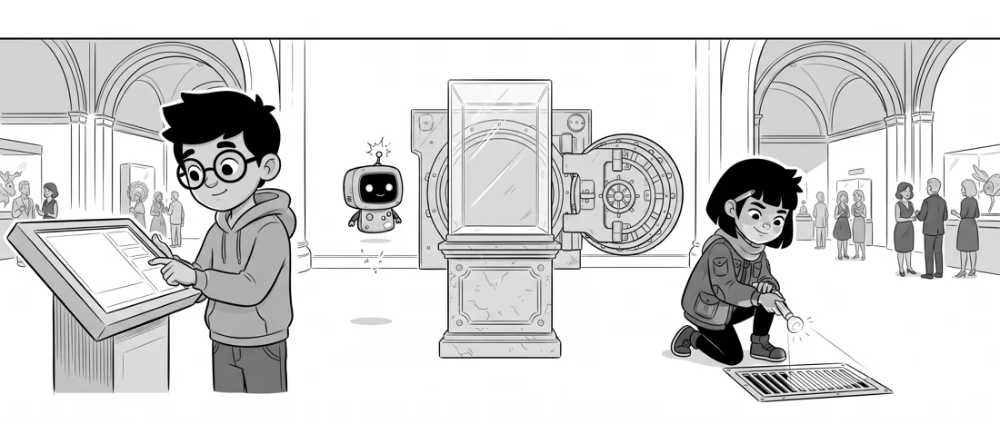
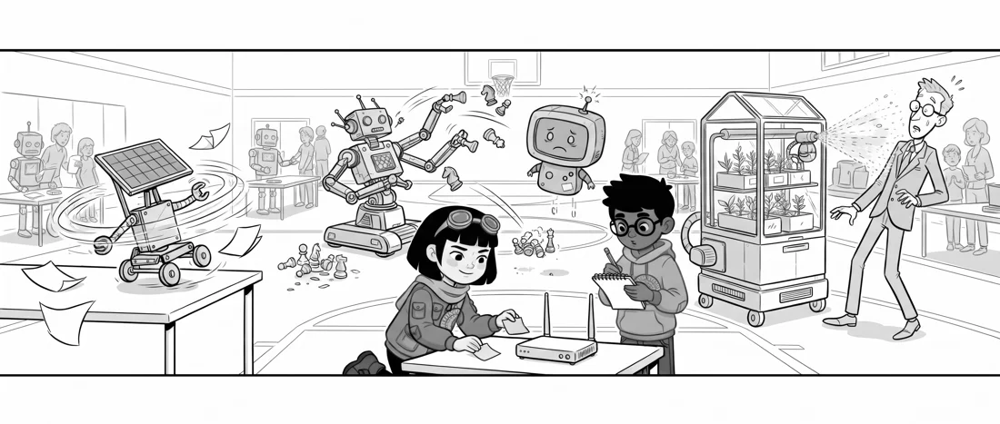
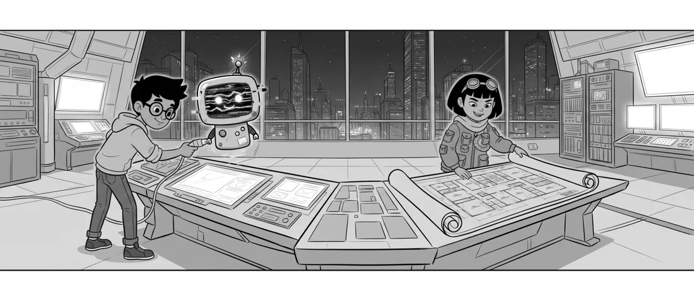
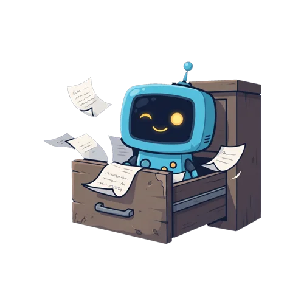

The Clockwork Crown Heist
The lights go out at a museum gala for 90 seconds. When they come back on, the Gear-Crown is gone.
Binary, Caesar cipher, logic gates, IF/ELSE, shortest paths
FUDFN WKH FDVH
Bit locked this message. Can you unlock it?
A crown vanishes from a locked vault. Robots go wild at the science fair. A skyscraper races towards a midnight blackout. Kids aged 8–11 crack 24 puzzles to find out who did it, using real computer science and just a pencil.
The book is in final review at Amazon. Soon on Amazon.com, Amazon.de and Amazon.co.uk.

Every case has four suspects and eight puzzles. Only one suspect is guilty. Your child is the detective.
Study the map, meet the suspects and listen to what each one says.
Bit the robot explains one computer-science idea, with an example. Then it's your turn.
The answer is the name of a drawer. Inside is a clue. Wrong answers open decoy drawers!
Cross out suspects until only one is left. Then fill in the case board.
Each case gets a little harder. Case 1 is gentle. Case 3 is a real challenge.
Inside the book, the pictures are black and white, ready for pencils.

The lights go out at a museum gala for 90 seconds. When they come back on, the Gear-Crown is gone.
Binary, Caesar cipher, logic gates, IF/ELSE, shortest paths

Someone plugged a sneaky USB stick into the school router. Now the robots are out of control.
Pigpen cipher, bubble sort, ASCII, coordinates, hexadecimal, loops

London's greenest skyscraper locks itself down. At midnight, all 64 floors go dark.
Binary search, stacks, parity bits, run-length encoding, sequences
The pattern spotter. He breaks big problems into small steps and never skips his working.
The code cracker. She reads secret messages faster than most people read a menu.
A pocket robot, brilliant at maths, but static makes it glitch. Always check what Bit says!

Four new puzzles to print at home or in class, with an answer page. Not in the book, so it's a perfect try-before-you-buy.
Real computer-science ideas, taught through stories. Children solve short puzzles, then use the answers to rule out suspects. No device needed.